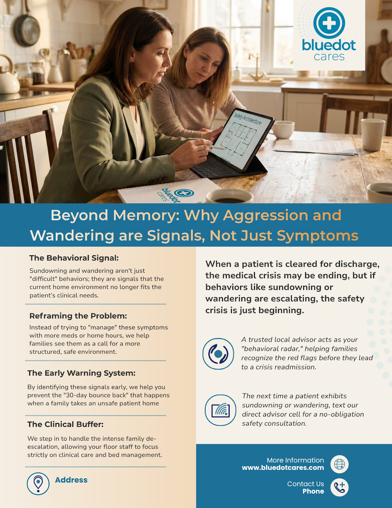
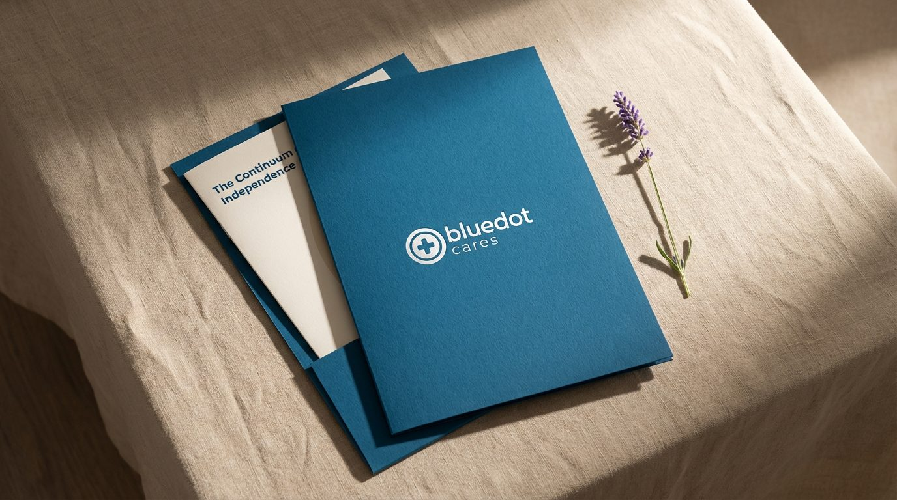
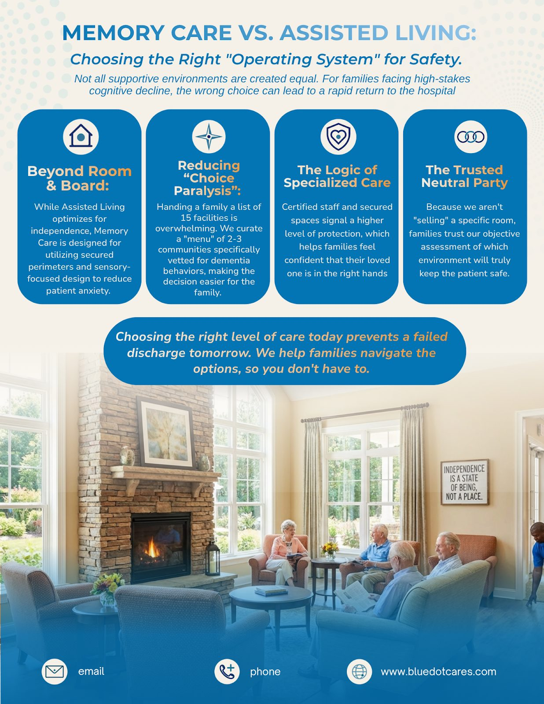
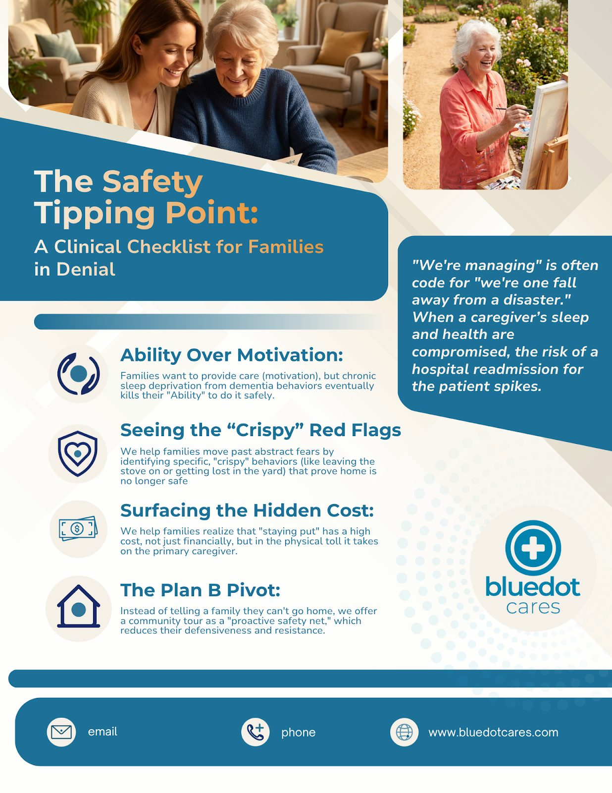

Positioning · Roadmap BlueDot Cares
The Brand Built to Navigate a Broken System
BlueDot Cares: Fractional Brand Strategy & 2026 Growth Roadmap
Genre: Brand Strategy · Behavioral Design · Messaging Architecture · Growth Planning
Tools: Custom AI Gems · Strategic Audit Framework · Behavioral Psychology · Messaging Design · Style Guide Development
The senior care industry is fragmented, commission-driven, and designed to sell to families at their most vulnerable. BlueDot Cares was built to be something different: a Medicare-covered dementia care navigation service that absorbs the complexity so families can focus on what matters.
My role was to give that mission a strategic architecture. As Fractional Chief Brand Strategist, I conducted a comprehensive brand audit, repositioned the brand around a single defining voice, and built a 12-month strategic roadmap to carry the organization into 2026 with clarity, consistency, and market authority.
Deliverables At A Glance
- Comprehensive brand audit across all multi-channel touchpoints
- 12-month strategic growth roadmap
- Brand Voice Architecture: "Calm Authority" framework
- Brand Archetype Model: 70% Caregiver + 30% Ruler
- Messaging Framework and Lexicon System
- Brand Tone, Posture & Style Guide
- Social content creative direction
- Performance governance framework for marketing operations
The Challenge
The senior care market forces families into a false binary, keep a parent home at all costs or move them to a facility. Both sides are incentivized by commission, not by the family's actual needs.
The primary decision-maker (typically an adult daughter in her 40s) is navigating a labyrinth of aggressive sales tactics while managing grief, fear, and logistical overload. The result is what behavioral science calls the Endowment Trap: paralysis born from the fear of making the wrong choice in a system designed to sell rather than support.

BlueDot Cares had the right solution. The brand needed to match it.
How I Built It
The audit came first. I analyzed existing brand equity, evaluated every customer touchpoint, and identified the core misalignment: BlueDot was communicating warmth when their audience needed authority. Families in crisis don't need a friend. They need a seasoned pilot, someone calm, serious, and completely in control.
That insight became the strategic foundation. I developed the "Calm Authority" brand voice architecture, a precise hybrid of 70% Caregiver and 30% Ruler.
The Caregiver provides empathy and warmth. The Ruler provides structure and leadership. Neither works alone. Together they create a brand that says both "we care about you" and "we have this under control."
From that foundation I built the full messaging framework, lexicon system, and brand posture guidelines; giving the executive team a replicable system for consistency across every channel, campaign, and touchpoint going forward.
The Experience
The strategic output went beyond a document. It became an operational blueprint:
Brand Voice System: A defined "Calm Authority" architecture with posture guidelines, tone rules, and a lexicon that eliminated the "hyper-cheerful" marketing tone common in the senior care industry.
The Seasoned Pilot Posture: A behavioral positioning model grounded in the psychology of trust: BlueDot communicates the way passengers want a pilot to sound during turbulence: grounded, in charge, and completely present.
Social Creative Direction: Campaign visuals and messaging built around the adult daughter as primary decision-maker, reducing psychological friction at the point of consideration.


2026 Growth Roadmap: A 12-month strategic framework for marketing operations, performance governance, and brand scalability.

What I Learned
In healthcare-adjacent markets, trust is the product. Before a family will act, they need to believe the brand understands their situation completely, not just the logistics, but the emotional weight of the decision. Every strategic choice, from the archetype blend to the word selection in the lexicon, had to earn that trust before asking for anything in return.
Why It Matters
BlueDot Cares proves that behavioral strategy isn't just for consumer brands. In high-stakes, emotionally loaded categories, the brand that gets the psychology right wins the trust first, and trust is the only conversion mechanism that works in this market.
The Bigger Picture
The most dangerous thing a healthcare brand can do is feel like a salesperson. BlueDot Cares needed to feel like a guide, expert, calm, and unconflicted. That required more than a visual refresh. It required a complete rethinking of how the brand positions, speaks, and earns permission to lead. This engagement delivered that foundation from the ground up.
The Tech & AI Stack
Custom LLM Gems, Behavioral Psychology Frameworks, Strategic Audit Methodology, Canva, Photoshop, Google Analytics, Social Platforms
Ready to build a brand your market actually trusts? Start the Conversation
12-month strategic growth roadmap for BlueDot's 2026 marketing operations
"Calm Authority" voice architecture: a 70% Caregiver, 30% Ruler archetype
Eliminated the hyper-cheerful tone endemic to the senior-care category
Complete messaging framework, lexicon, and brand-posture guidelines for the executive team
Want this kind of work on your brand?
If your brand should be working harder than it is, this is where it starts. One direct conversation.